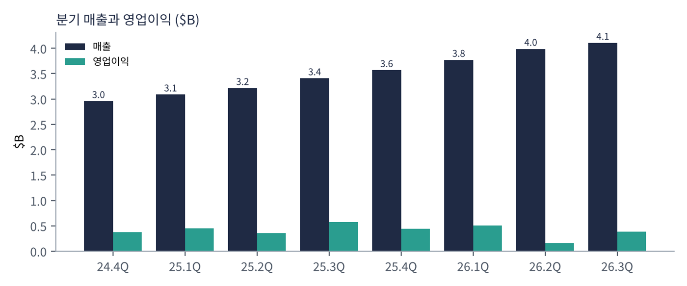
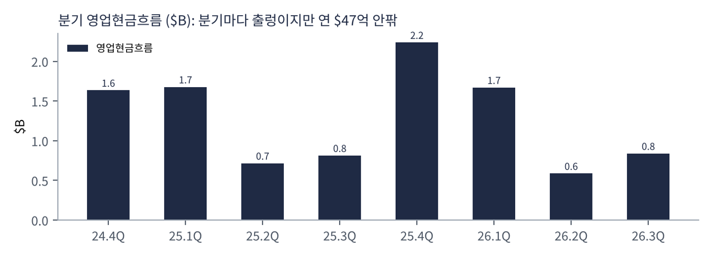
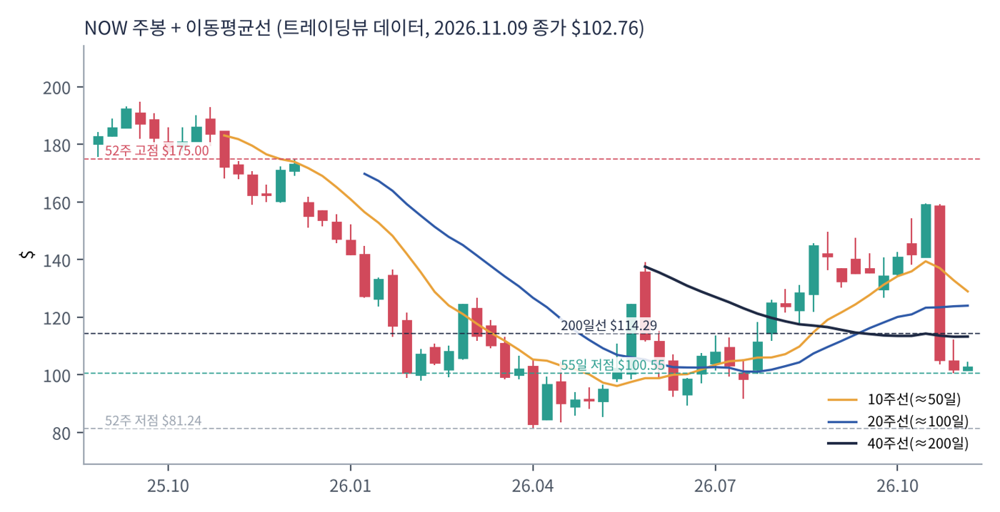
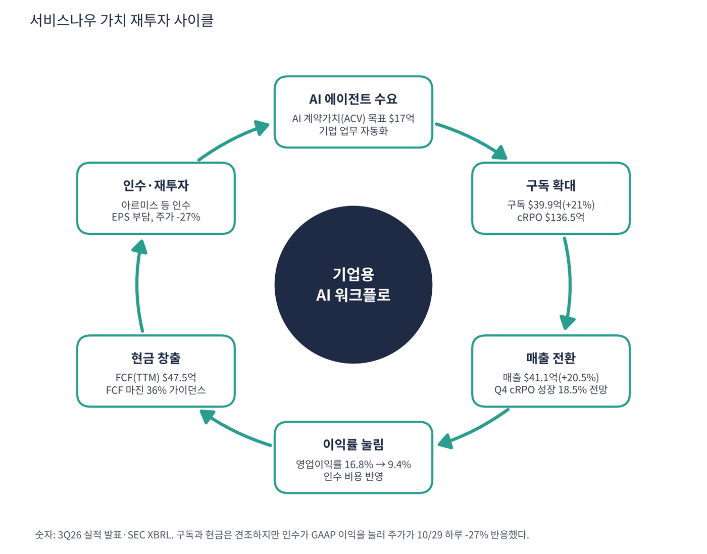

서비스나우는 기업의 IT·인사·고객 서비스 업무를 한 화면의 클라우드 소프트웨어로 자동화해 주는 기업용 워크플로 플랫폼 회사다. 매출의 97%가 구독이며 전 세계 대기업·정부가 고객이다. 최근에는 AI 에이전트(Now Assist)를 얹어 '기업 업무를 AI가 처리하게 만드는 플랫폼'으로 방향을 잡았다. 10월 29일 3분기 실적 발표 다음 날 주가가 하루 -27%(사상 최대 낙폭)를 기록해 투자자 관심이 커진 종목이다.
| 항목 | 내용 |
|---|---|
| 종목 | ServiceNow, Inc. (NOW) · NYSE · 기업용 소프트웨어 · 본사 캘리포니아주 산타클라라 |
| 시가총액 | 약 $1,067억 · TTM PER 74.1배 · P/S 6.9배 · 11/9 종가 $102.76(+0.8%) |
| 최근 분기(2026.3Q) | 매출 $41.06억(+20.5%), 구독 $39.9억(+21%), 영업이익 $3.85억(9.4%), 순이익 $2.77억, 영업현금 $8.39억 |
| 연간·다음 분기 가이던스 | FY26 구독 매출 $157.8억 안팎, FCF 마진 36%, 4Q cRPO 성장 18.5%, AI ACV $17억 목표 |
| 주식분할 | 5대 1 분할(24.4Q EPS -3.63은 분할 보정 오류, 표시에서 제외하지 않고 참고만 함) |
| 다음 실적 | 4Q26 실적: 2027년 1월 하순 예정(확인 필요) |
| 직책 | 인물 | 역할·특징 |
|---|---|---|
| 회장 겸 CEO | 빌 맥더멋 | 2019년 취임. SAP 출신 영업 중심 경영자로 인수와 대형 계약으로 플랫폼 영역을 넓힘 |
| 사장 겸 CFO | 지나 마스탄토노 | FCF 마진·cRPO·구독 가이던스를 설명하는 재무 책임자 |
경영 스타일: '플랫폼을 사서 붙인다'. 영업이익률이 25.3Q 16.8%에서 26.2Q 4.1%로 떨어진 것은 인수(아르미스 등) 관련 비용이 반영됐기 때문으로 보인다(회사 상세 설명은 이번 수집에서 확인하지 못함). 공격적 인수로 제품 범위를 넓히지만 GAAP 이익은 눌리는 구조라 시장이 '이익 가시성'을 문제 삼았다.
IT·인사·고객 서비스 업무를 하나의 플랫폼에서 처리하며 AI 에이전트를 얹는다. 고객이 여러 업무를 쓸수록 이탈이 어려워진다.
AI 에이전트가 기업 안의 업무 흐름을 대신 처리하게 하고, 사용량·가치에 기반한 과금으로 단가를 높이는 것을 지향한다.
| 분기 | 매출 | 영업이익 | 영업이익률 | 순이익 | 영업현금 | 순이익률 | EPS | 특이 사항 |
|---|---|---|---|---|---|---|---|---|
| 24.4Q | $29.6억 | $3.7억 | 12.6% | $3.8억 | $16.4억 | 13.0% | – | |
| 25.1Q | $30.9억 | $4.5억 | 14.6% | $4.6억 | $16.8억 | 14.9% | 0.44 | |
| 25.2Q | $32.1억 | $3.6억 | 11.1% | $3.9억 | $7.2억 | 12.0% | 0.37 | |
| 25.3Q | $34.1억 | $5.7억 | 16.8% | $5.0억 | $8.1억 | 14.7% | 0.48 | |
| 25.4Q | $35.7억 | $4.4억 | 12.4% | $4.0억 | $22.4억 | 11.2% | 0.38* | |
| 26.1Q | $37.7억 | $5.0억 | 13.3% | $4.7억 | $16.7억 | 12.4% | 0.45 | |
| 26.2Q | $39.9억 | $1.6억 | 4.1% | $3.0억 | $5.9억 | 7.5% | 0.29 | 영업이익률 급락(인수 영향) |
| 26.3Q | $41.1억 | $3.9억 | 9.4% | $2.8억 | $8.4억 | 6.7% | 0.27 | 구독 $39.9억(+21%), 주가 -27%(10/29) |
EPS는 희석 주당순이익(GAAP, SEC 제출 자료 기준)이다. *는 4분기를 '연간 EPS − 1~3분기 합'으로 계산한 근사치라 실제 발표값과 다를 수 있다. 서비스나우 24.4Q는 2025.12 주식분할(5대1) 전후 기준이 섞여 생략했다(25.1Q부터는 분할 반영).


흐름 요약: 매출은 $29.6억에서 $41.1억으로 39% 늘었고 3분기 증가율은 +20.5%다. 구독 증가율은 +21%로 안정적이지만 영업이익은 25.3Q $5.72억에서 26.2Q $1.62억으로 급락한 뒤 26.3Q $3.85억으로 일부 회복했다. 순이익은 $5.0억에서 $2.8억으로 줄어 매출이 늘수록 GAAP 이익은 줄어드는 구간이다. 영업현금은 분기마다 크게 흔들려(26.2Q $5.9억, 25.4Q $22.4억) 연간 기준 FCF가 더 정직하다. 최근 4분기 영업현금 합계 $53.3억, 트레이딩뷰 FCF $47.5억이다.
| 수익원 | 내용 | 26.3Q | 특징 |
|---|---|---|---|
| 구독 | 클라우드 플랫폼 이용료(IT·인사·고객 서비스·AI 에이전트) | $39.9억 (+21%) | 매출의 97%, 갱신율 높은 반복 매출 |
| 전문 서비스 등 | 구축·컨설팅 | 약 $1.2억 | 구독 도입을 돕는 보조 매출 |
구독 매출 성장 +21%는 총매출 +20.5%와 비슷하다. 구독 계약 잔고(cRPO) $136.5억이 향후 12개월의 매출 가시성을 높이며 4분기 cRPO 성장은 18.5%로 3분기보다 약간 낮게 제시됐다. AI 계약가치(ACV) 목표는 $17억이다(제품별 세부 수치는 이번 수집에서 확인하지 못함).
서비스나우가 가려는 곳은 기업의 모든 업무가 AI 에이전트를 통해 돌아가는 '기업용 AI 운영 체제'다. 마이크로소프트·세일즈포스·오라클과 같은 자리를 놓고 경쟁한다.
| 축 | 내용 |
|---|---|
| 플랫폼 확장 | IT → 인사 → 고객 서비스 → 보안(인수)로 영역 확대 |
| AI 에이전트 | 사용량 기반 가격으로 좌석당 요금제의 한계 극복 시도 |
| 인수 | 보안·데이터 기업 인수로 제품 범위 확대(EPS 부담 동반) |
| 현금 창출 | FCF 마진 36%를 유지하며 인수와 환원 병행 |

| 이동평균 | 값 | 종가 대비 | 해석 |
|---|---|---|---|
| 5일선 | $105.01 | -2.1% | |
| 20일선 | $132.10 | -22.2% | |
| 50일선 | $135.46 | -24.1% | |
| 100일선 | $123.77 | -17.0% | |
| 200일선 | $114.29 | -10.1% | $114.3, 회복하면 장기 신호 매수 전환 |
11/9 종가 $102.76는 52주 고점 $175.00의 59% 수준, 52주 저점 $81.24 대비 +26%다. 1·3·6·12개월 수익률은 -27%·-19%·+12%·-40%. 연중 고점 $175에서 10월 29일 실적 발표 후 하루 -27%로 떨어져 $102.8이 됐다. 이 하락으로 200일선과 50일선을 한꺼번에 내려갔고 52주 저점($81.2)까지 거리는 가깝지 않다.
트레이딩뷰 차트에서 사용자가 직접 그린 작도는 포함하지 않았고, 이동평균·돈키언 등 지표는 일봉 데이터로 직접 계산했다.
| 규칙 | 기준 | 현재 값 | 신호 |
|---|---|---|---|
| 장기 추세 필터 | 종가 vs 200일선 | $102.76 < $114.29 | 매도 |
| 중장기 교차 | 50일선 vs 200일선 | $135.46 > $114.29 | 매수 |
| 단기 교차 | 20일선 vs 50일선 | $132.10 < $135.46 | 매도 |
| 돈키언 채널 | 55일 고가 $159.50 / 저가 $100.55 | 중간값 $130.03 아래 | 매도 |
| 1개월 모멘텀 | 21거래일 수익률 | -27.0% (기준 $140.86) | 매도 |
| 3개월 모멘텀 | 63거래일 수익률 | -19.4% (기준 $127.54) | 매도 |
| 6개월 모멘텀 | 126거래일 수익률 | +12.3% (기준 $91.49) | 매수 |
| 12개월 모멘텀 | 252거래일 수익률 | -40.2% (기준 $171.75) | 매도 |
| 종합 (8개 평균) | -0.50 | 매도 우위 |
해석: 점수 -0.50(매도 우위)로 8개 중 6개가 매도다. 50/200 교차와 6개월 기준만 매수라 장기 추세는 아직 완전히 무너지지 않았다. 14일 ATR $7.01 (6.8%).
| 가격 | 무엇이 바뀌나 | 의미 |
|---|---|---|
| $114.29 | 200일선 회복 시 장기 신호 매수 전환 | 점수 ±0.25 |
| $130.03 | 돈키언 중간값(55일 고·저점 평균) | 채널 신호 전환선 |
| $132.10 | 20일선 회복 시 단기 흐름 개선 | 단기 추세 신호 |
| $100.55 | 55일 저점 이탈 시 하락 추세 확정 | 손절 판단 기준 |
| 구분 | 가격 | 근거 |
|---|---|---|
| 저항 2 | $114.29 | 200일선 |
| 저항 1 | $105.01 | 5일선 |
| 지지 1 | $100.55 | 55일 저점 |
| 지지 2 | $81.24 | 52주 저점 |
PEG는 GAAP 기준으로 산출되지 않고 대체 지표는 1.1이다. 낙폭이 큰 만큼 $100.6(55일 저점) 부근에서 $98~105 구간에 계획 금액의 30%씩 두 번 분할 매수하고 5일선 $105 위 안착 시 40%를 추가한다(평균 약 $101.5, 손절 $92 기준 손익비 1:1.3~1:3.2). 1차 $114.3(200일선), 2차 $132(20일선)에서 익절한다. $92 종가 이탈이면 52주 저점($81.2) 재시험 가능성이 있어 손절한다. 확인 신호는 4Q cRPO 성장 18.5% 이상 유지, AI ACV $17억 달성, 영업이익률 회복이다. 가격대는 내 시나리오이며 매매 권유가 아니다.
| 악재 요인 | 내용 | 강도 |
|---|---|---|
| AI의 좌석 대체 | AI 에이전트가 좌석당 구독 모델을 약화시킨다는 우려(소프트웨어 업종 전반) | 높음 |
| 인수 부담 | 아르미스 등 인수 비용이 GAAP 이익을 눌러 영업이익률 9%대 | 높음 |
| 성장 둔화 | 4Q cRPO 성장 18.5%로 하향 제시 | 중간 |
| 경쟁 | 마이크로소프트·세일즈포스·오라클이 AI 에이전트로 같은 시장 공략 | 중간 |
| 데이터 한계 | 24.4Q EPS는 주식분할 보정 오류. 영업현금은 분기 변동이 큼 | 참고 |
| 티커 | 회사 | 시가총액 | PER(TTM) | PEG | P/S | EPS 성장(YoY) |
|---|---|---|---|---|---|---|
| NOW | 서비스나우 | $107B | 74.0배 | – | 6.89배 | -16% |
| CRM | 세일즈포스 | $177B | 19.6배 | 0.33 | 3.99배 | +59% |
| ORCL | 오라클 | $362B | 18.8배 | 0.38 | 4.85배 | +48% |
| MSFT | 마이크로소프트 | $4,049B | 28.5배 | 0.76 | 11.40배 | +36% |
| PLTR | 팔란티어 | $408B | 118.6배 | 0.48 | 56.64배 | +234% |
| CRWD | 크라우드스트라이크 | $234B | 적자 | – | 41.98배 | – |
EPS 성장률은 트레이딩뷰 TTM 값이다. SAP·워크데이·어도비는 이번 수집에서 데이터를 확보하지 못해 넣지 못했다.
비교 결론: 서비스나우 PER 74.1배는 세일즈포스(19.6)·오라클(18.8)·마이크로소프트(28.5)보다 높지만 EPS가 -16%로 줄어든 상태의 PER이라 직접 비교가 어렵다. 이익이 인수로 눌려 PER이 높아 보이는 구간이며, FCF 기준으로 보면 P/FCF 22.5배다.
서비스나우는 적자 기업이 아니다. 그래서 런웨이 대신 인수 부담과 성장 둔화 시 주가 배수가 얼마나 내려갈 수 있는지를 점검했다.
| 지표 | 값 | 계산·출처 | 해석 |
|---|---|---|---|
| 영업현금 (26.3Q) | $8.39억 | SEC 분기 | 분기 변동 큼(26.2Q $5.87억, 25.4Q $22.4억) |
| 잉여현금흐름 (TTM) | +$47.5억 | 트레이딩뷰 | FCF 마진 30.8% ($47.5억 ÷ $154.3억), 회사 가이던스 36% |
| 현금 / 총부채 | $46.2억 / $84.2억 | 트레이딩뷰 최근 분기 | 순부채 $38.0억, 순부채/EBITDA 1.2배 |
| P/FCF | 22.5배 | 시총 $1,067억 ÷ $47.5억 | FCF 기준으로는 PER보다 훨씬 낮음 |
| 가정 P/S | 주가 | 현재 대비 | 의미 |
|---|---|---|---|
| 8.0배 (기대 회복) | $119 | +16% | AI ACV 확대 확인 시 |
| 5.0배 (성장 15%대 둔화) | $75 | -27% | 10/29 낙폭을 한 번 더 반복 |
| 4.0배 (성장 한 자릿수 우려) | $60 | -42% | 소프트웨어 약세장 배수 |
가정 P/S는 모두 내가 둔 시나리오다. TTM 매출 $154.3억, 시총 $1,067억(P/S 6.9배), 주가 $102.76 비례 환산 기준이다.
| 기준 | 매출 | P/S | 비고 |
|---|---|---|---|
| 트레이딩뷰 표시값 | – | 6.9배 | — |
| 최근 4분기(TTM) | $154.3억 | 6.9배 | 시총 $1,067억 ÷ $154.3억 |
| 동종 소프트웨어 | – | – | 세일즈포스 4.0, 마이크로소프트 11.4, 오라클 4.9, 팔란티어 56.6 (11/9) |
해석: P/S 6.9배는 마이크로소프트(11.4)보다 낮고 세일즈포스(4.0)보다 높다. 성장률(20%)이 세일즈포스(11%)의 약 2배라는 점이 프리미엄의 근거다.
| 지표 | 값 | 판정 |
|---|---|---|
| EBITDA (TTM, 트레이딩뷰) | $31.1억 | 흑자 |
| EBITDA 마진 | 20.2% | $31.1억 ÷ $154.3억 |
| TTM 영업이익률 | 9.7% | SEC 합산 $14.9억 ÷ $154.3억 |
| 순부채 / EBITDA | 1.2배 | 순부채 $38.0억 |
| EV/EBITDA | 약 35.5배 | (시총 $1,067억 + $38.0억) ÷ $31.1억 |
| 방식 | PER | EPS 성장률 | PEG | 판정 |
|---|---|---|---|---|
| 트레이딩뷰 (TTM) | 74.1배 | -16.1% | – | 산출 불가 |
| P/FCF ÷ 매출 성장 (내 지표) | P/FCF 22.5배 | 매출 +20.5% | 1.10 | 기준 초과 |
| P/FCF ÷ 구독 성장 (내 지표) | 22.5배 | 구독 +21% | 1.07 | 기준 초과 |
판정: GAAP PEG는 산출 불가(EPS가 감소 중), 대체 지표는 1.1 안팎으로 투자 적격 기준(1.0)을 살짝 넘는다. 인수 비용이 이익을 눌러서 GAAP 이익 기준 PER은 의미가 약하다. P/FCF를 성장률로 나눈 값은 정식 PEG가 아니라 내가 만든 대체 지표이며 FCF 성장률은 반영하지 않았다.

서비스나우 사이클은 AI 수요 → 구독 확대 → 현금 → 인수·재투자로 이어진다. 구독과 현금은 강하지만 인수가 GAAP 이익을 누르는 점이 주가를 흔든다.
| 고리 | 현재 숫자 | 고리 강도 | 약해지는 신호 |
|---|---|---|---|
| ① AI 에이전트 수요 | AI ACV $17억 목표 | 강함 | ACV 목표 하향 |
| ② 구독 확대 | 구독 $39.9억(+21%), cRPO $136.5억 | 강함 | cRPO 성장 18.5% 아래로 하락 |
| ③ 매출 전환 | 매출 $41.1억(+20.5%) | 강함 | 4Q 매출 둔화 |
| ④ 이익률 | 영업이익률 25.3Q 16.8% → 26.3Q 9.4% | 약함 | 인수 비용 지속 |
| ⑤ 현금 창출 | FCF(TTM) $47.5억, 가이던스 36% | 강함 | FCF 마진 36% 미달 |
| ⑥ 인수·재투자 | 아르미스 등 대형 인수, 순부채 $38억 | 주의 | 추가 대형 인수 |
이 사이클의 구조: 앞단(수요·구독·현금)은 강한데 ④의 GAAP 이익이 약해 시장이 ⑥(인수)를 의심한다. 약한 고리는 ④·⑥이다.